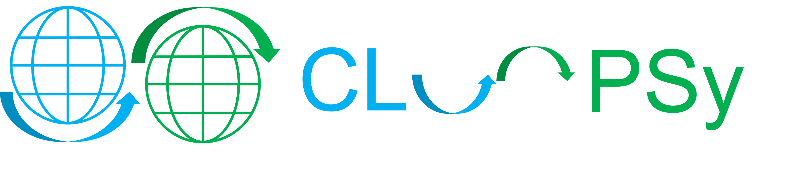

CLOOPSy - Copernicus Land cOver crOwdsourcing Platform for Sentinel-based mapping
Repository link »
PDF link »
View review issue »

Vecchi et al., (2017), Journal of Open Source Software, 2(15), 291, doi:10.21105/joss.00291
Summary
CLOOPSy is a mobile application designed with the aim to collect data from a crowd of volunteers (Dell’Acqua and De Vecchi 2017). In particular, the idea is to ask them to contribute with a picture (Burgelman 2015)(Marr 2016) and to select a land cover class based on the CORINE taxonomy (Laso Bayas et al. 2016). Collected reports, following the administrator approval, will be released to the public and available for download using the APIs. A tutorial is mandatory for each new user. Reports will be used to automatically validate of algorithms working on satellite data, update of land cover layers and to train machine learning algorithms. CLOOPSy is a native mobile app developed using the Xamarin framework (Xamarin 2017). Reports can only be submitted by registered users. Collected pictures are seasoned with GNSS location and compass direction. Examples for each class of the CORINE Land Cover taxonomy are provided with the aim to help in the decision. The app is built on a general framework, therefore it can be adapted in order to collect different things. Every submitted report is sent to a remote server. It is available for Android on the Google Play store and soon it will be released on the Apple App store. A web portal is also available for CLOOPSy. Volunteers can register and begin to submit reports using the 'Register' page. The main page is a map showing all the public reports and it does not require any login. Reports are considered public only after being approved by super-users. Once a user is logged, the map is filled with all the reports, including those submitted by him/herself and not yet reviewed. The server integrates an algorithm for automatic matching with parcel GIS layers where available. The service is hosted by the ESA RSS (Research and Service Support) service (Agency 2017) for future easy integration with Sentinel-2 data repository. Public and private reports can be download using RESTful (Representational state transfer) APIs.
-
References
Agency, European Space. 2017. “ESA Research and Service Support.” Accessed July 11. http://wiki.services.eoportal.org/tiki-index.php?page=About+RSS.
Burgelman, Luc. 2015. “The Rise of the Citizen Data Scientist.” NGDATA. https://www.ngdata.com/the-rise-of-the-citizen-data-scientist/.
Dell’Acqua, Fabio, and Daniele De Vecchi. 2017. “Potentials of Active and Passive Geospatial Crowdsourcing in Complementing Sentinel Data and Supporting Copernicus Service Portfolio.” Proceedings of the IEEE.
Laso Bayas, Juan, Linda See, Steffen Fritz, Tobias Sturn, Christoph Perger, Martina Dürauer, Mathias Karner, et al. 2016. “Crowdsourcing in-Situ Data on Land Cover and Land Use Using Gamification and Mobile Technology.” Remote Sensing 8 (11): 905. doi:10.3390/rs8110905.
Marr, Bernard. 2016. “How the Citizen Data Scientist Will Democratize Big Data.” Forbes. Accessed November 16. http://www.forbes.com/sites/bernardmarr/2016/04/01/how-the-citizen-data-scientist-will-democratize-big-data/.
Xamarin. 2017. “Xamarin.” Accessed July 11. https://www.xamarin.com/.